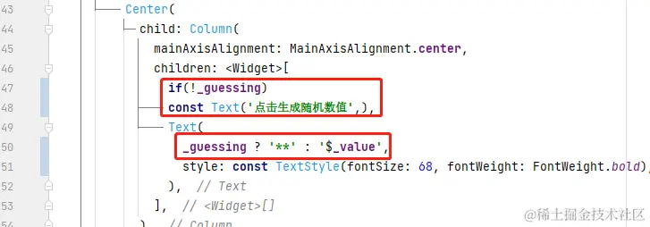
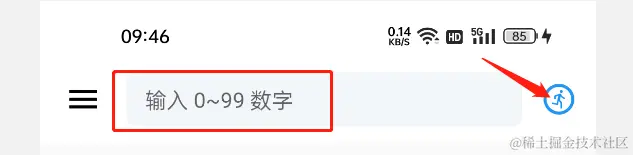
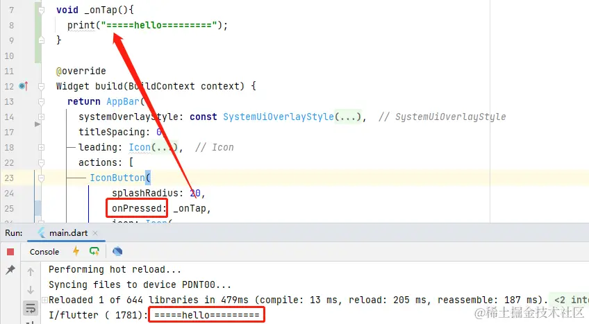
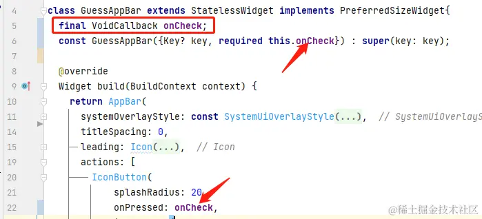
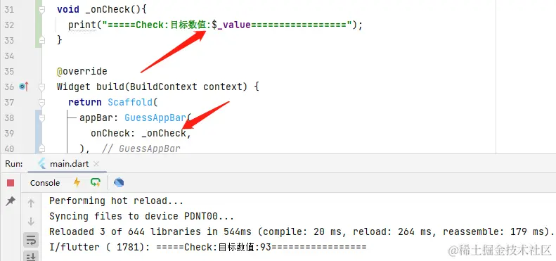
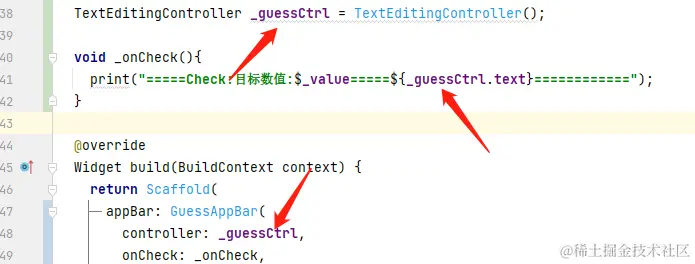

- 01 前言-教程内容导读.md.html
- 02 Flutter 开发环境的搭建.md.html
- 03 新手村基础 Dart 语法 (上).md.html
- 04 新手村基础 Dart 语法 (下).md.html
- 05 Flutter 计数器项目解读.md.html
- 06 猜数字界面交互与需求分析.md.html
- 07 使用组件构建静态界面.md.html
- 08 状态数据与界面更新.md.html
- 09 校验结果与提示信息.md.html
- 10 动画使用与状态周期.md.html
- 11 猜数字整理与总结.md.html
- 12 电子木鱼界面交互与需求分析.md.html
- 13 电子木鱼静态界面构建.md.html
- 14 计数变化与音效播放.md.html
- 15 弹出选项与切换状态.md.html
- 16 用滑动列表展示记录.md.html
- 17 电子木鱼整理与总结.md.html
- 18 白板绘制界面交互与需求分析.md.html
- 19 认识自定义绘制组件.md.html
- 20 通过手势在白板上绘制.md.html
- 21 白板画笔的参数设置.md.html
- 22 撤销功能与画板优化.md.html
- 23 应用界面整合.md.html
- 24 数据的持久化存储.md.html
- 25 网络数据的访问.md.html
- 26 教程总结与展望.md.html
- 捐赠
08 状态数据与界面更新
编程中的一切都是操作数据，界面上的表现都需要具体数据来支撑，决定界面展现的数据称之为 状态数据。然而：
有些数据中界面中是恒定不变的，比如一些固定的文字、图标、颜色等； 也有些数据会随着用户的交互发生改变，比如计数器项目中，数字会随着用户的点击而增加。
如何通过代码逻辑，维护状态数据在交互过程中的正确性，就是对状态数据的管理。在一个需求中，哪些 状态数据 是可变的，需要具体问题具体分析。
1. 从按钮禁用开始说起
在猜数字的需求之中，点击按钮生成随机数。但在猜测的过程中，我们期望禁止点击来重新生成，否则又要重新猜测。也就是说，在一次猜数字过程中，只能生成一个随机数；同时，猜对时，需要解除禁止，进入下一次游戏。
对于生成随机数的需求，需要一个量来标识是否是在游戏过程中。这就是根据具体需求，来分析必要的状态数据。比如这里通过 bool 类型的 _guessing 对象标识是否在游戏过程中。界面和交互的逻辑表现在：当 _guessing 为 false 时，支持点击，按钮呈蓝色；为 true 时，禁止点击，按钮呈灰色：
| 标题 | |
|---|---|
如下所示，在 _GuessPageState 中定义 _guessing 属性，FloatingActionButton 按钮组件在创建时根据 _guessing 值控制相关属性。比如 _guessing 为 true 时 onPressed 为 null, 表示不响应点击，且背景色是灰色 Colors.grey ：
---->[guess_page.dart#_GuessPageState]----
bool _guessing = false;
// 略...
// 按钮组件构建逻辑 ：
floatingActionButton: FloatingActionButton(
onPressed: _guessing ? null : _generateRandomValue,
backgroundColor: _guessing ? Colors.grey : Colors.blue,
tooltip: 'Increment',
child: const Icon(Icons.generating_tokens_outlined),
),
注: boolValue ? a : b 称三目运算符，相当于一种简写的赋值语句；boolValue 为 true 时取 a，反之取 b 。下面是一个小例子：
int a = 5;
int b = 6;
bool boolValue = true;
int c = boolValue ? a : b
// 上行代码等价于下面代码：
int c;
if(boolValue){
c = a;
}else{
c = b;
}
上面通过 _guessing 状态数据控制组件构造，从而达到控制表现的效果。写一个问题就是，如何在交互逻辑中，正确地维护 _guessing 状态数据值。这里的逻辑是：点击之后，表示游戏开始，将 _guessing 置为 true 。所以只需要在 _generateRandomValue 方法中添加一行即可：
void _generateRandomValue() {
setState(() {
_guessing = true; // 点击按钮时，表示游戏开始
_value = _random.nextInt(100);
});
}
大家可以将当前代码自己跑一下，点击操作。体会一下状态数据变化的过程 (业务逻辑)，和对界面表现的控制力(界面构建逻辑)。
2.密文的展示
既然是猜数字，那么随机生成的数字肯定不能明晃晃地摆在那里，而且生成之后，上方的 点击生成随机数值 的提示信息也不需要了。可以看出这些界面表现都是通过 _guessing 状态数据决定的，通过状态数据控制界面呈现，一般称之为 界面构建逻辑 。
也就是在猜数字过程中，要隐藏数字的展示；取除上方的提示字，效果如下：
代码实现也比较简单，和之前一样，通过 _guessing 值，决定组件构造的内容。从这里可以看出，一个状态数据，可以控制界面中很多部件的表现形式。

注: 在列表中可以通过 if(boolValue) 来控制是否添加某个元素。
当前代码提交位置: guess_page.dart
3. 回调事件的传递
这样我们就实现了随机数字生成的需求，现在需要做的是猜数字需求。 在输入框中输入数字，点击确定按钮，比较后想用户提示大小信息。现在首要问题是知道如何获取输入的数字，以及如何触发按钮的点击事件。

我们之前将头部栏单独封装成一个组件，独立存放。现在想处理头部栏的相关工作，直接看 guess_app_bar.dart 文件即可。先来看一下点击事件的回调：
这里使用 IconButton ，也就是图标按钮，在 onPressed 构造入参中可以传入无参函数，用于回调。也就是说，你点击按钮就会触发一个函数(方法)，如下所示，点击一下在控制台输出信息：

在 GuessAppBar 类中，并没有猜数字过程中的相关数据，在这里校验大小并不是很合适。这时就可以通过回调，将事件触发的任务移交给自己的使用者。因为函数本身也可以视为一个对象，如下所示，将函数作为属性成员，通过构造函数进行赋值：

这样在构造 GuessAppBar 组件时，就可以将回调事件交由 _GuessPageState 处理，而这里有我们维护的状态数据。处理如下：

4.输入控制器的使用
目前，输入框可以进行输入，但如何获取到输入内容呢? 我们可以使用输入控制器 TextEditingController 它可以承载输入的内容。它会作为 TextField 的构造入参，而 TextField 在 GuessAppBar 中；又因为由于核心逻辑的维护在 _GuessPageState 中，所以控制器对象可以交由 _GuessPageState 维护，并可以通过 GuessAppBar 构造函数来传入：
---->[guess_page.dart#GuessAppBar]----
class GuessAppBar extends StatelessWidget implements PreferredSizeWidget {
final VoidCallback onCheck;
final TextEditingController controller;
const GuessAppBar({
Key? key,
required this.onCheck,
required this.controller,
}) : super(key: key);
@override
Widget build(BuildContext context) {
return AppBar(
// 略同...
title: TextField(
controller: controller,
这样，在 _GuessPageState 里创建 _guessCtrl 属性，作为 GuessAppBar 构造入参，就可以和输入框进行绑定。当输入文字，点击按钮后，查看控制台，就可以看到输入信息。

另外，注意一下，输入控制器有销毁的方法，需要覆写状态类的 dispose 方法，调用一下：
@override
void dispose() {
_guessCtrl.dispose();
super.dispose();
}
5.本章小结
到这里，相关的数据和界面就准备完毕，当前代码提交位置: guess_page.dart 。本章最主要的知识是通过改变数据来修改界面的呈现效果。比如在交互过程中，按钮的禁用、文字的密文展示会发生变化，它们的表现都在构造逻辑中由数据决定。大家可以通过当前的源码好好思考一下，状态数据和界面之间的关系。
下一章，将继续完善功能，处理校验以及提示用户输入值大了还是小了。
© 2019 - 2023 Liangliang Lee. Powered by gin and hexo-theme-book.